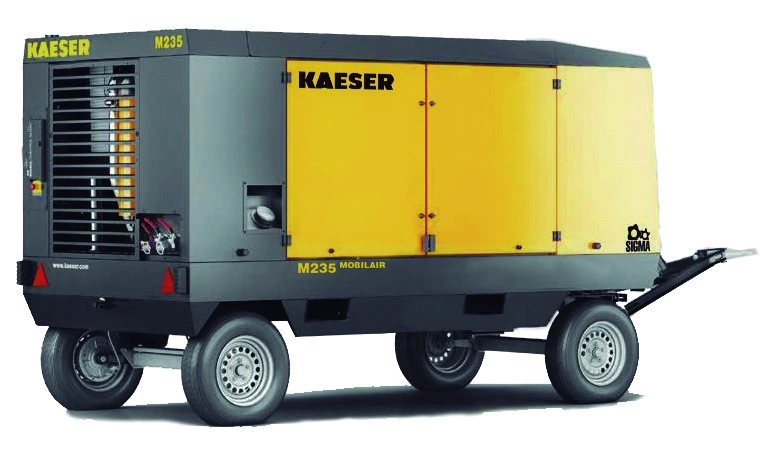

KAESER / Equipos de aire
M235
Compresora de aire portátil MOBILAIR con perfil SIGMA, caudal de 825 cfm y presión máxima de trabajo de 125 psig según la tabla suministrada. Cuenta con chasis de alta resistencia, cabina galvanizada y caja de herramientas.
825cfm de caudal
125psig de trabajo
260hp a plena carga
Flota confirmada · disponibilidad para tus fechas: consultar
Cotizar este equipo
↓ Descargar ficha técnica (PDF, abre en otra pestaña)
PDF suministrado · 2 páginas
CONOCE EL PRODUCTO
Información
técnica.
Datos del documento suministrado. Se conservan las unidades y las alternativas de la fuente.
← Volver a Equipos de aire| Caudal | 825 cfm |
|---|---|
| Presión máxima de trabajo | 125 psig |
| Motor, denominación de la tabla | Cummis QSB 6.7 T |
| Tipo de motor | Diésel |
| Potencia a plena carga | 260 hp |
| Frecuencia a plena carga | 2000 rpm |
| Frecuencia sin carga | 1200 rpm |
| Capacidad del tanque de combustible | 119 gal. |
|---|---|
| Peso seco | 3230 Kg. |
| Salida | No especificada en la celda del documento |
| Máximo nivel de ruido indicado | 76 db(A) a 23 ft. |
| Longitud con barra de remolque | 5207 mm. |
| Ancho | 1770 mm. |
| Altura | 2182 mm. |
| Chasis | Alta resistencia |
|---|---|
| Cabina | Galvanizada con revestimiento electrostático |
| Almacenamiento | Caja para herramientas |
| Control de temperatura | Válvula anticongelante para mantener la temperatura de trabajo y evitar la congelación de herramientas |
| Depósito | Tanque de combustible de gran tamaño |
| Presiones opcionales | Hasta 200 psi |
|---|---|
| Tratamiento de aire opcional | Posenfriador y paquetes de filtración |
| Montaje opcional | Sobre trineo (skid) |
¿ES EL PRODUCTO QUE NECESITAS?